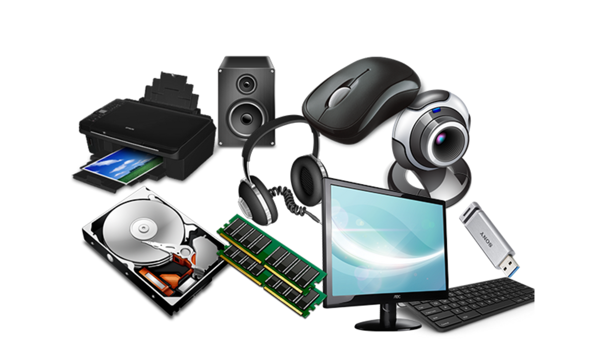

Aksesuarlar
Aksesuarlar, bilgisayar sisteminizi tamamlayan ve kullanıcı deneyimini geliştiren önemli bileşenlerdir. Klavye, fare, kulaklık, hoparlör, webcam, USB hub gibi ürünler, hem performans hem de estetik açıdan sisteme değer katar.
Aksesuarların Temel Özellikleri
Her aksesuar, kullanım amacına göre farklı özellikler sunar. İşte dikkat etmeniz gereken bazı unsurlar:
1️⃣ Ergonomi ve Konfor
Klavye ve fare gibi giriş cihazlarının ergonomik tasarımı, uzun süreli kullanımlarda rahatlık ve konfor sağlar.
2️⃣ Dayanıklılık
Aksesuarların üretiminde kullanılan malzemelerin kalitesi, uzun ömür ve dayanıklılık açısından büyük önem taşır.
3️⃣ Özelleştirilebilirlik
Aydınlatma seçenekleri, programlanabilir tuşlar ve ekstra özellikler, kullanıcı deneyimini kişiselleştirme imkânı sunar.
Aksesuar Seçerken Dikkat Edilmesi Gerekenler
Seçiminizi yaparken göz önünde bulundurmanız gerekenler:
✔ Uyumluluk: Kullanacağınız bilgisayar sistemiyle ve diğer bileşenlerle uyumlu mu?✔ Performans: Giriş cihazlarının tepki süresi, hassasiyeti ve diğer işlevleri beklentilerinizi karşılıyor mu?
✔ Konfor: Uzun süreli kullanımlarda rahatlık sağlıyor mu?
✔ Estetik: Tasarımı, aydınlatma seçenekleri ve renk uyumu kişisel zevkinize uygun mu?
Aksesuar Türleri
💻 1. Giriş Cihazları
Klavye, fare, dokunmatik yüzey gibi cihazlar, bilgisayarın temel giriş işlevlerini yerine getirir.
🎮 2. Oyun Aksesuarları
Özel tasarımlı ve ekstra özelliklere sahip oyun klavyeleri, oyun fareleri, kulaklıklar ve kontrol cihazları, oyun deneyimini iyileştirir.
🖥 3. Diğer Aksesuarlar
Webcam, USB hub, harici depolama cihazları ve benzeri aksesuarlar, farklı kullanım alanlarına yönelik çözümler sunar.